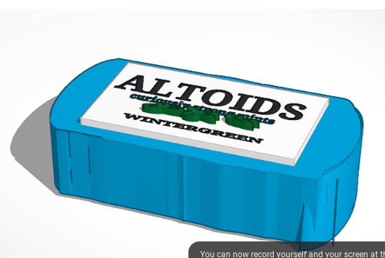

This is my Week Two Blog
This week in class we spent a lot of time going over how to work AWS. With working on Aws, we learned all of the html commands that are needed to be able to push to this other website called github. On github, we will be able to see our websites come to life! We get a small preview already on AWS but to see it all on github is really very fascinating. I think that it is super amazing how we can add pictures and videos which gives our websites more dimension. I also got to really meet my table mates and make good connections with them.
This is my Week Three Blog:
This week in class, we learned a lot of new things about this website called tinker cad. I learned that on tinker cad, I can create my designs in 3-d! Today in class, we did a challenge on tinker cad to see who could make the best design of an object from their home. For my design, I chose to do an Altoids can. For this altoids can, I attempted to draw my own design for the shape but when that had wonky edges, I used squares and half cylinders to fix wherever necessary. Below this paragraph, I'm going to add pictures of my work and the actual Altoid can that I drew inspiration from :p. We as well worked on our challenge project in which the goal is to use three Rube Goldberg designs to create something that will pop balloon with a needle. For my design, I have choen to use the lever, the inclined plane, and the pulley. For this vision, I suggested that a pulley lower down something heavy on to the lever in order for the lever to toss the baseball up. After it is tossed, it will fall back down an roll down the inclined plane where it will hit a suspended needle that is hanging down from a cardboard stand in which after it is hit, will hit the balloon. Today, we are getting in groups to show all of our project ideas and we will decide who's will work best!
